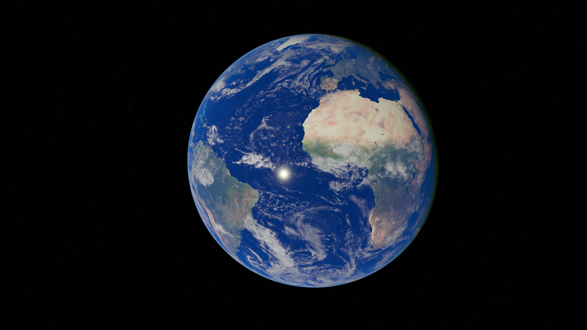

Меркурій

Меркурій — найближча до Сонця та найменша планета Сонячної системи. Через відсутність щільної атмосфери на ньому бувають різкі перепади температур.
Цікаві факти про Меркурій
- Рік на Меркурії триває лише 88 земних діб, адже він рухається орбітою швидше за інші планети.
- Одна сонячна доба на Меркурії триває близько 176 земних діб — це довше, ніж його рік.
- Поверхня планети вкрита безліччю ударних кратерів і нагадує поверхню Місяця.
Венера

Венера — друга від Сонця планета, яка за розмірами та масою схожа на Землю. Проте її густа атмосфера з вуглекислого газу створює потужний парниковий ефект.
Цікаві факти про Венеру
- Венера — найгарячіша планета Сонячної системи: температура біля її поверхні сягає близько +465 °C.
- Вона обертається навколо своєї осі у зворотному напрямку порівняно з більшістю планет — Сонце на ній «сходить» на заході.
- У небі Венери часто можна побачити за яскравістю лише після Сонця та Місяця, тому її називають Ранковою або Вечірньою зіркою.
Земля

Земля — третя від Сонця планета і наш рідний дім. Вона має сприятливу температуру, киснево-азотну атмосферу та великі запаси рідкої води.
Цікаві факти про Землю
- Близько 71% поверхні Землі вкрито водою Світового океану.
- Земля — єдине відоме науці небесне тіло, де існує життя.
- Магнітне поле Землі та її атмосфера захищають поверхню від шкідливого космічного випромінювання й більшості метеоритів.
Марс

Марс — четверта від Сонця планета, відома як «Червона планета» через велику кількість оксиду заліза (іржавого пилу) на її поверхні.
Цікаві факти про Марс
- На Марсі розташований вулкан Олімп — найвищий відомий вулкан у Сонячній системі (заввишки понад 21 км).
- Марс має два невеликі супутники неправильної форми — Фобос і Деймос.
- Доба на Марсі триває майже так само, як і на Землі — трохи більше 24 годин.